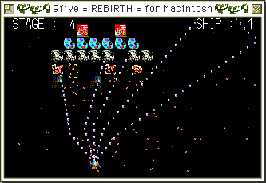

Macintosh/Windows上で動作するサウンドシステムです。
現在、開発環境としてTSS Compilerが、 演奏環境としてTSD Playerが存在します。
開発機種が68040ベースのマシンだったため、040クラスのマシンでも
十分な速度で動作します。が、やはりFM変調を多用したデータは重くなります。
MML型の開発ツールです。MMLと言うと、Macintoshな方にはあまり馴染みがない
かもしれません。MMLとは、「Music Macro Language」の略で、マクロでできた
音楽用の簡易言語のようなモノです。テキストエディタ等を使って、一定の法則に従って
書かれたソースファイルをこのコンパイラにかけてやることで演奏ファイルが作成されます。
TSS Compilerによって生成されたTSDファイルを再生するものです。
実際には内部は２段階にライブラリ化されています。
最も最下層に位置するのがPSEmuライブラリです。
この段階で、ソフトウェア的に様々な音源をエミュレートします。
現在はMSXなどで有名なPSG音源や、ファミコン等で鳴らせるデューティ比の変更可能な
矩形波、さらにノイズとサイン波をサポートしています。
また、各チャンネル間でFM変調をかけることができるため、
サイン波どうしにこの処理を加えることで、FM音源のような音をだすことができます。
当然２チャンネル間のみならず、多チャンネルを連結して変調をかけることも可能です。
また、将来的（かなり近いうち）にはSCC音源、PCM音源もサポートします。
実は今回のバージョンからリバーブもかかったりします。
PSEmuの上に被さるようにして動作しているのがTSSDriverライブラリです。
この段階で、TSDファイルを解釈し、チャンネルを確保したり解放したりします。
演奏も自由に制御できます。かなり強力なライブラリになっており、ファイル名を渡す
のみで演奏できる他、ファイラーから選択して演奏といったことまでサポートしています。
PSEmuライブラリと組み合わせてゲームなどに組み込むことにより、簡単にBGMを
付けることができます。
そして、これらのライブラリを利用し、グラフィカルな情報表示やUIをサポートするのが
TSD Playerとなります。
今回はPSEmuとTSSDriverのライブラリを用いて、Netscape用のplug-inを作りました。
TSDファイルの直接再生の他、HTMLに埋め込んでページ上でのバックグラウンド演奏
をも可能にします。
以下がWindows版のアーカイブです
T'SoundSystem version 0.60 プレイヤーセット for Windows（含：Netscape plug-in）(TSS060PW.LZH)以下がMacintosh版のアーカイブです
T'SoundSystem version 0.60 プレイヤーセット（含：Netscape plug-in）(TSS060P.sit.hqx)念のため、旧版も以下に置いておきます。
TSD Player version 0.60 Alpha(TSDPlayer060a.sit.hqx)Windows版は現在NTでは正しく動作しないことが確認されています。
Netscape plug-inは正しく動作すると思います。原因究明中なので
次回リリースでは対応できると思います。また、95でもまれに動かない
ケースもあるようです（現在報告１件）。
ソフトウェアエンベロープやらPCM音源やらを実装するにあたり、
キーオン／キーオフと休符の区別やら波形データの格納方法やらと
大幅にフォーマットを変更しなければならなくなってきました。
また、今回からサポートしたリバーブ機能もデータ側から制御できるように
したいとも考えています。
更に、サンプルデータをいろいろ作っているうちに
テンポずれが目立つようになってきました(^^;。これは困ります（笑）。
実はMSXの曲をメインにならしてたので、分解能60という
（MSXのタイマーに準拠(^^;）凄まじい状況だったりします。
というわけでこれも変更。ドライバへの割り込み間隔でテンポを
調整できるようにしたいと思います（いままでは一定だったのよん）。
いままでのように上位互換での拡張も可能なのですが、せっかくα版で
公開していることだし、互換性を無視したフォーマットの拡張を
考えています。つまらないことでフォーマットを
汚くしたくないですから。できる限りスマートに定義して移植の際
楽をしたい（笑）。いや本当に。
が、ソースレベルでの互換性は維持するつもりです。
このあたりはZMUSICを見習いたい所です。というわけで、
基本はソースレベルでのデータ配布。
サンプルデータもソースを付属してあります。
インベーダータイプのシューティングゲームです。オリジナル版はkappaさんの作った
PC-9821版です。これを、C言語の練習がてら、X680x0/Ko-Window環境に移植したのが
移植版の始まり。最初の移植が10MHzのX68000で最低２つ同時に実行できる程度の速度を
意識して移植したため、フレームがかなり少なめにとってあり、かなり画面が見づらくなってます。
ちなみに現在ではX680x0/Ko-Window版、Macintosh版の他にもWindows3.1/WinG版、Unix/X版があります。
ウリは滅茶苦茶な返し弾です。熱いよけを楽しんで下さい。まぁバランスは滅茶苦茶なんですが(^^;
ちなみにPSEmu+TSSDriverライブラリを組み込んであります。
